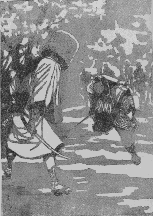

「親分」
ガラッ八の八五郎は息せき切っておりました。続く――大変――という言葉も、容易には唇に上りません。
「何だ、八」
「親分、――引っ返して下さい。山で
「何？」
「巡礼姿の若い男が、
「よし、行ってみよう」
平次は少しばかりの荷物を町内の人達に預けると、獲物を見つけた猟犬のように、飛鳥山へ取って返します。
柔かな夕風につれて、どこからともなく飛んでくる桜の
二人が山へ引っ返した時は、全く文字どおりの大混乱でした。異常な沈黙の
「
ガラッ八の声につれて、人波はサッと割れました。その中には早くも駆けつけた見廻り同心が、配下の手先に指図をして、斬られた巡礼の死骸を調べております。
「お、平次じゃないか。ちょうどいい、手伝ってくれ」
「
平次は同心樫谷三七郎の側に差寄って、踏み荒した桜の根方に、
「それが不思議なんだ、――敵討と言ったところで、花見茶番の敵討だ。竹光を抜き合せたところへ、筋書どおり留め女が入って、用意の
「ヘエ――」
平次は同心の説明を聴きながらも、巡礼の死体を丁寧に調べてみました。笠ははね飛ばされて、
右手に持ったのは、銀紙貼りの竹光、それは
「身元は？ 旦那」
平次は樫谷三七郎を見上げました。
「すぐ解ったよ、
「ヘエ――」
「茶番の仲間が、宗次郎が斬られるとすぐ駆けつけた。これがそうだ」
樫谷三七郎が
そのうちの虚無僧は、巡礼姿の宗次郎を斬った疑いを被ったのでしょう。特に一人の手先が引き添って、スワと言わば、縄も打ち兼ねまじき気色を見せております。
次第に
陰惨な、そのくせ妙に陽気な、言いようもない不思議な花の山です。
「旦那、少し訊いてみたいと思いますが――」
平次は樫谷三七郎を顧みました。
「何なりと訊くがよい」
「では」
平次は茶番の仲間を一とわたり眺めやります。
「お前は？」
一番先に眼を着けたのは、
「ヘエ、同じ町内の兼吉と申します、油屋渡世で」
「知ってるだけを話してみるがよい」
平次の調子は冷たくて
「お花見も毎年のことだから、今年は趣向を変えて、敵討の茶番を出そうと言い出したのは、出雲屋さんでした」
「…………」
「出雲屋さんは二枚目型だから、敵を討つ方の巡礼、私はこんな柄ですから、討たれる方の虚無僧で」
「…………」
平次は黙って先を促します。
「ここで落ち合うのは
「その竹光を見せて貰おうか」
「ヘエ――」
虚無僧の兼吉が、
「それからどうした」
「出雲屋さんは一足先へ出ましたが、あとの三人はお
「家の方にどんな用事があったんだ」
「それが不思議で、――瓦町の家へ引返すと、女房は使いなどをやった覚えはないと言います」
「フーム」
「私を手間取らせておいて、私に化けた奴が山へ駆けつけ、出雲屋さんを斬ったのでございましょう」
「誰かそれを見た者は無かったでしょうか」
平次は樫谷三七郎を顧みました。
「五人や十人は見ていたはずだ。が、花時の飛鳥山にはそんな茶番は毎日二つ三つある。
樫谷三七郎は
「
「ヘエ――、最初と申しましても、敵名乗が始まってからでございます」
茶店の老爺は逃げも隠れもならず、仕様事なしの証人になりました。
「どんな事を言ったか知ってるだろう」
「何でも、芝居のせりふのような事を申しましたよ。――親の敵権太左衛門、ここで逢ったは百年目――とか何とか」
「それは斬られた方の巡礼の方だな」
「ヘエ――、すると、虚無僧は黙って引っこ抜いて斬りつけました」
「黙って？」
「何にも言わなかったようでございます。巡礼は少し見当が違った様子で竹光で受けましたが、虚無僧のは真刀だったとみえて、竹光は一ぺんに切れて、巡礼の肩先へ斬りつけました」
「フム」
「巡礼は驚いた様子で、――
「…………」
「お茶番の積りで見物に寄って来た人達も、このとき少し変だわいと思った様子でしたが、気のついた時はもう、虚無僧は逃げてしまって、間もなく、六部の
茶店の老爺の話は思いの外
「その虚無僧は、この人とは違うのか」
平次は油屋の兼吉を指さしたのです。
「ヘエ――」
老爺は返事に迷った様子でした。
「背の高さは？」
「かなり高い方でございました」
「天蓋や、着付や、尺八は？」

「大概決りがございますから、よく似ております」
老爺の穏やかな調子のうちにも、兼吉は逃げ路を
そこへ、ノッソリと現われたのは、四十年配の浪人者です。
「宗次郎殿が殺されたそうじゃないか、一体どうした事だ」
「ああ
虚無僧姿の兼吉は泣き出しそうです。
「貴殿は？」
同心樫谷三七郎は、横合からズイと出ました。二人にあまり物を言わせたくなかったのでしょう。
「蔀半四郎と申す。出雲屋の食客じゃ――」
半四郎は場所柄を考えたか、こう言いかけて、苦笑いの唇をつぐみました。
「出雲屋の主人が斬られたと、どこで聴かれた」
樫谷三七郎は追及します。
「遅れて夜桜見物に参ると、山中の大評判じゃ。巡礼姿の男が、虚無僧に斬られたと聞いたが――これ、油屋、その方が宗次郎を斬ったのか」
「とんでもない、旦那」
兼吉はもう一度
「肩はかすり傷だ、刀を胸へ突っ立てるなどは、町人の仕業だな」
蔀半四郎は死骸を無遠慮に調べながら、こんな事を言います。
続いて六部になった倉松を調べました。が、これは背恰好が兼吉と似ているというだけで何の得るところもありません。順当に馬道を出て、多勢と一緒に順当に飛鳥山へ来たことは、時刻からみてもまず疑いはないようです。
「お、こいつは真刀が仕込んである」
手先の一人は、倉松の持っていた
「有り合せの品でございます、ヘエ」
倉松はギョッとした様子でしたが、思い直して苦笑いをしております。錫杖に仕込んだ真刀は、物々しい品には相違ありませんが、肝心の血がついていなかったのです。
「お前は？」
平次は錫杖などに構わず、その次に小さくなっている
「ヘエ――、良助と申します」
ヒョイとお辞儀をしました。
「稼業は？」
「ヘエ――、つまらない商売で、ヘエ」
良助は首筋を掻きました。小作りのキリリとした
「遊び人ですよ、親分」
ガラッ八は
「
「ヘエ――」
平次に
「大層山へ来るのが遅れたそうじゃないか、家から使いの者でも来たのか」
と平次。
「それが不思議なんで、親分、油屋さんと同じような具合に、
良助の話には
「馬道の家には誰が居るんだい」
「独り者で、
「お前が帰ったのを見た者はないわけだな」
「ヘエ――」
良助は落胆した様子です。
「その
「このお振袖じゃ、馬道は歩けません。
「フーム」
「佐野屋でお訊き下されば解りますよ、親分」
「まア、いい。皆んな佐野屋で着換えたのか」
「いえ、王子で着換えたのは女形のあっしだけで、あとは六部や虚無僧や巡礼だから気が強いわけで、あの
良助の話はよく筋が通ります。
あとは出雲屋の手代佐吉、町内の者二三人、これはいずれも不断着のままで、何の変哲もなく、馬道を出たのも一緒ですから、疑う余地は少しもありません。
ちょうどその時、山の八方へ手分けをして、
「樫谷様、――虚無僧が逃げた様子はございません」
「何？」
報告はみんなこの調子です。
「敵討騒ぎの
「待て待て。すると、出雲屋宗次郎を殺した下手人は、まだ、この山の中にいるというのだな」
樫谷三七郎は予想外の様子です。
「花見客は驚いて大概帰りました。山の四方はすっかり見張ってありますから、怪しい者は、出ようも入りようもありません」
「フーム」
「平次、どうだ」
三七郎は平次を顧みました。
「あっしにも解りません、旦那」
「それじゃともかく兼吉を番所まで
「ヘエ――」
泣き出しそうな兼吉を追い立てて、樫谷三七郎は引揚げました。
残ったのは、平次とガラッ八と、山を見廻っていた土地の役人だけ。
「親分、もう一度山中捜してみましょうか」
ガラッ八は、沈み返った親分の顔を覗くのです。
「虚無僧の隠れるような穴なんか無いはずだよ」
「ヘエ――」
「それより
「ヘエ――」
「宗次郎に怨みのある奴はないか、宗次郎が死んで
「心得た」
ガラッ八は気軽に飛んで行きます。
「親分」
後ろから静かに声を掛ける者があります。静かながら、妙に
桜に松の交った
「誰だ」
平次は思わず足を停めます。
「親分、私を忘れちゃ、
取って付けたような笑いですが、それが例の羽根で撫でるような
「お滝か」
平次は素気ない調子で言いました。王子のお滝という、名題の女
「お滝か――はないでしょう。銭形の親分さんともあろうものが、思案投首で、私のいるのも知らずに通り過ぎたりして」
「用事がなきゃ放っておいてくれ、俺は忙しい」
平次はクルリと背を向けて、そのまま行手を急ごうとすると、
「まア、待って下さいな、親分」
ヒラリと身を
「用事があるなら言えッ」
もっての外の平次。
「出雲屋の若主人殺しの下手人は、見当だけでも付きましたか、親分」
「何？」
「それを教えて上げようと思って、ここで待っていたのですよ、親分」
「誰だ？」
「ホ、ホ、まるで
「…………」
「ね、親分さん、私は十年も前から、親分に岡惚れてるじゃありませんか、憎らしいねえ、本当に」
「十年前――お前が、小さい妹と二人で、両国で赤い
「あら、よく知ってるのねえ、嫌になるじゃありませんか」
お滝は袂を翻して、平次を打つような素振りを見せました。そういったお滝だったのです。
「だから余計な事を
「かなわないよ、親分には。――ね、親分さん、樫谷の旦那は、油屋の兼吉さんを縛る積りのようだけれど、あの人は、刃物を隠す
「それがどうした」
「私は出雲屋さんを斬ったのは、
「フーム」
お滝は不思議なことを言い出しました。
「油屋兼吉さんが手違いで遅れたと知らずに、巡礼になった出雲屋さんが、真物の虚無僧――それも敵持でビクビクしているのか何かへ、いきなり敵名乗を揚げて、竹光でも何でも、ピカピカするので斬り付けたとしたら、どうなるでしょう？」
「…………」
「真物の虚無僧はお茶番とは知らないから、すっかり真に受けて、本当に返り討ちにする気で殺さないとは限らないでしょう――」
お滝の言うことは、いかにも理に詰みます。
「ありそうな筋だな」
平次は静かに応えました。
「真物の虚無僧で敵持だったら、今頃は大宮あたりまで逃げ延びていますよ。飛鳥山で腕組をしながらお月様を見たって、親分さん」
お滝の舌は次第に
「だがな、お滝、――敵討騒ぎがあってから、一人も山から逃げ出した虚無僧はないんだぜ」
「天蓋を取って、
「…………」
「そんな浪人者は、飛鳥山に二三十人いましたよ、親分」
平次はしかし頭を振りました。虚無僧が人を返り討ちにしたところで、姿を変えて逃出す必要があろうとは思われません。
「騒ぎのすぐ後なら、楽に逃げられたはずだ。姿まで変えるはずはない。――姿を変えて逃げたものなら、やはり出雲屋に掛り合いの者か、茶番の仲間だ」
平次の言うのは道理です。変装する以上は、顔を知られたくない者の仕業に相違ありません。
「親分」
「もういい。――お前は誰かを助けたいんだろう、余計な事をすると
「…………」
女は黙って頭を垂れました。
平次は足音高く谷中の方へ行くと見せて、そっと引返しました。朧の中を帰って行くお滝の姿が、何としても唯事ではなかったのです。
道は松の闇を過ぎて桜の朧に入りました。たゆたいがちなお滝の足取りから、平次は何やら読み取るような心持で、再び飛鳥山の方へ向いましたが、お滝は山に登る様子もなく、無関心に山裾を廻って、王子の町へ出ると、そのまま、後も振り向かずに、花見茶屋の佐野屋の
しばらく間をおいて、佐野屋へ入った平次。
「今ここへお滝が入ったようだが――」
うさんな眼を店中に配りました。
「これは、銭形の親分さんで。ヘエヘエ、ツイ今しがた、お滝
番頭は
「ハッハッハッ、ハッ、ハッ、――この平次が色気違いに見えるかえ、番頭さん」
「とんでもない親分さん」
「まア、いい、若い女の後を
「ヘエヘエ」
「今日、山の上であの騒ぎのある少し前に、馬道の良助が、ここで着物を変えたそうだ。それは、
平次は調子を戻して、大事な事を訊ねました。
「
「良助親分が女の着物を着て山へ行くと、間もなく
下女のお作というのが
「敵討騒ぎのある前か後か」
「いえ、騒ぎがここへ聞えたのは、それから少し経ってからですが、馬道の良助親分が、
「山へ行く時、ここへどんな物を預けて行ったえ」
「馬道の親分が、着ていたものだけでございました」
「フーム」
良助に対する疑いも次第に薄れて行きます。いや、佐野屋の番頭に訊くまでもなく、山の茶店の老爺の言うのが本当なら、宗次郎を殺した虚無僧は大男で、良助のような小男は、最初から疑いの圏外に置かるべきはずです。
お滝に
「親分、いろいろの事が判りましたぜ」
それを待ち構えていたのはガラッ八の八五郎です。
「何が判ったんだ、順序を立てて言ってみるがいい」
と平次。
「順序も何もありゃしません。お茶番へ出た連中で、宗次郎に怨みのないのは一人もないくらいのもので」
「フーム」
「虚無僧になった油屋の兼吉は、出雲屋から金を借りて、眼玉の飛出すような高い利息を七年越し払わされてますぜ」
「それから」
「六部になった倉松は、町内の顔役で、日頃宗次郎とは、
「フーム」
「遊び人の良助は女の怨みだ。――出雲屋の新造というのは元
「まだあるのか」
「番頭の喜八、これは馬道の店で留守をしていたそうですが、近所で訊いてみると、遣い込みだらけですよ――それから女房のお夏は
「首を締めたんじゃない、虚無僧になって飛鳥山で返り討ちにしたんだ。留守番の番頭と女房のお夏は下手人じゃない」
「すると、下手人は誰でしょう、親分」
「良助は山へ行った時刻が騒ぎの後だし、虚無僧の
「…………」
「もう一つ、兼吉だったら、血刀の始末をどうしたか、それも判らない。素人があれだけの事をしたんだから、返り血ぐらい浴びたはずだが、兼吉の身体にはそんな跡は一つもない」
「すると、怪しいのは、一人も無いじゃありませんか、親分」
「怪しくないのを取りのけた、残りは怪しい奴だ――」
「蔀半四郎」
「そのとおりだ、今のところ蔀半四郎が一番怪しい。が、浪人でも二本差しだ、うっかり縛るわけにも行くまい」
「親分、番頭の喜八は、頭痛がすると言って、
馬道の出雲屋へ行ったガラッ八、二度目には変な事を聴き込んで来ました。
「遣い込みのあるという番頭だな」
「ヘエ、その野郎で」
「行ってみようか、八」
二人はすぐ飛んで行きました。昨夜樫谷三七郎に引かれて行った、油屋の兼吉は、申訳相立ち難くそのまま留め置かれ、八丁堀の空気は、もうこの事件を解決と見ている様子なのが、ひどく平次を
「やア、岡っ引」
「ヘエ」
店へ入ると、食客浪人蔀半四郎、朝っぱらから酒臭くなって
「貴様は、この蔀半四郎を怪しいと睨んだそうだな」
「とんでもない、旦那」
「いまさら
「恐れ入りました。決して蔀様を疑うというわけじゃございません。出雲屋に出入りの者、昨日の茶番に掛り合いの者は、一応取調べるのが、あっしの仕事で、ヘエ」
「何だ？ 岡っ引が武士を調べる？ とんでもない野郎だ、――それへ直れ、手討にしてくれる、ウーム」
手の付けようがありません。平次は
「番頭さん、変な事を訊くが、あの浪人者は、亡くなった御主人とは、どんな引っ掛りなんだい」
「何でもありません、用心棒に雇っただけで――」
「用心棒？――町人が用心棒に、浪人を雇っていたというのか」
「ヘエ、――まア、用心棒という程でもないでしょうが」
「何のための用心棒だ」
「お金を用立てた方に怨まれておりましたし、それに、へッ」
佐吉は妙な笑いようをするのです。
「女ですよ、親分。死んだここの主人ときたら、男も良かったが、名題の
「なるほどな」
平次は考え込みました。こう多勢の男女に怨まれているようでは、誰を目当てに縛りようはありません。
とにもかくにも、昨日半日寝込んだという、番頭の喜八の部屋を見せて貰いましたが、これは一方口で、脱け出すようなはずもなく、脱け出したところで、ここから飛鳥山まで飛んで行って、虚無僧に化けて主人を殺すにしては、喜八は少し年を取過ぎております。
飛鳥山の上で、敵討騒ぎのあった時刻まで、蔀半四郎はどこにいたか、これが、今のところ一番望みのある手掛りですが、
「あの浪人者でしょうか、親分」
ガラッ八はたまり兼ねて追いすがりました。馬道から、何を考えたか平次の足は、また飛鳥山の方へ向っているのです。
「いや、あの浪人者ではあるまい。宗次郎の傷は、武家――人の用心棒にでもなろうという、腕に覚えのある武士の仕業にしては、あんまり素人臭い。武芸は命がけの業だ、腕はなかなか隠せるものでない、それに」
「それに？」
「虚無僧の
「どこか――着換える場所はなかったでしょうか、親分」
「待ってくれ、八、今お前は何とか言ったな？」
平次は立止りました。
「どこかで、そっと着換える場所はなかったでしょうか――と」
「それだ」
平次は
「八、解った。お前もう一度花見をする気はないか」
「ようがすとも、親分」
「それじゃ飛鳥山へ行って、日の暮れるまで頑張ってくれ。あの昨日の騒ぎのあった桜の木の下だぞ、――どんな事があっても動くな、いいか」
「親分は？」
「俺は少し訊き込みたい事がある。上野の暮れ六つ（六時）が鳴ったら、王子の佐野屋の方へ降りて来い」
「ヘエ――」
「茶店から眼を離すな、――手前の姿なんか隠すことがあるものか。
「それっきりですか、親分」
「そうそう、手前相変らず財布が空だろう。飲まず食わずじゃ見張りもなるめえ、手を出しな」
「ヘエ――」
ガラッ八の大きな手の中へ、小粒を二つばかり落すと、平次はそのまま
それから夕方まで、ざっと半日。
ガラッ八は根気よく桜の根っこで、老爺の茶店を見張りました。昨日の騒ぎを聞伝えた人達は、物好き半分、桜の根と老爺の茶店に殺到して、この辺の混雑というものはありません。
ガラッ八は時々茶店へ行って、無駄話をしたり、茶を呑んだり、団子をつまんだり、用事のあるようなないような、取り止めのない顔で日暮れを待ちました。
やがて、
「
ガラッ八は愛想の好い老爺に挨拶して、軽い心持で山を降ります。
「八」
「ヘエ――」
どこからともなく現われたのは平次でした。
「ここで、しばらく様子を見るんだ」
「ヘエ――」
二人は物蔭に入って小半刻も経ったでしょう。
「見ろ、八」
平次の指す方を見ると、次第に
「親分」
「シッ、今に面白いものが見られる、静かに後を
二人はそれっきり黙って、老爺の後に従いました。幸いの夕闇、一丁とも離れずに、楽々と後が追えます。
三河島のとある家、――貧しくも哀れな
鍵も何にも掛っていなかったものか、ガタガタと戸を開けて入ると、火打鎌を鳴らして
「御免よ」
「…………」
老爺がギョッとした様子で顔を挙げました。片手は巻いた毛氈を
「俺だよ、
「親分」
「その毛氈の中を見せて貰いに来たよ」
「…………」
「虚無僧が山を降った様子がないというと、お前の店へ飛込んで着換えをしたはずだ。こんな判りきった事が、どうして今日まで俺に判らなかったろう」
「…………」
「お前があんまり正直そうな顔をしていたからだ」
平次は静かに老爺の傍へ腰をおろしました。
「曲者――宗次郎を殺した虚無僧は背の高い男だった――と言ったのはお前だ。掛り合いが恐ろしさに、誰も口を出す者はなかったから、お前が自分の都合の良いように言えた。――俺は多勢の口から曲者は小男だったという話を聞くのに今日半日かかったよ」
「…………」
老爺の眼は魚のように大きく見張られたまま、その手はワナワナと
「怨みのある宗次郎を殺すには、どこでもいいわけだが、多勢の見ているところで、こちらの顔を誰にも見せずに殺したかったろう、――曲者の芝居気だ」
「…………」
「幸い、飛鳥山のあの茶店の前で仇討の茶番をする話を聴いた。――お前は、前の日あの茶店を五両という大金を出して株を譲り受けたはずだ――それを聴き込むまでもなく、俺には何もかも解ってしまったよ。虚無僧の
「…………」
老人はガックリ首を垂れました。平次の論告を承服した姿です。
「天蓋と尺八と血刀と紋付は、持出しようがなくて一と晩あの茶店に隠しておいたはずだ。今日八五郎に見張らせたのは、昼のうちに持出させないためだったよ」
平次の用意には
「親分さん、恐れ入りました。いかにも、宗次郎の野郎は、この老爺が手に掛けて殺したに違いございません。あれは、私の娘を殺しました。
老爺は板敷の上に
「それを詮索するのに半日かかったよ、
「お縄を頂戴いたします、親分さん」
「いや違う、宗次郎を殺したのはお前じゃない」
「親分さん、この私でございます。私一人でやった事でございます」
「いや違う、――宗次郎を殺した下手人は今晩にもここへ様子を見にくるはずだ」
「親分さん」
老爺はツト身を
「あッ」
驚く間もなく、まだ斑々たる血潮のこびり付いたのを、自分の
「待った」
平次の手は
「なア、
「…………」
「誰かを
「…………」
「下手人によく言うがいい。宗次郎は悪い野郎だ、血も涙もない奴だ。幾人もの男があの宗次郎に高利の金を借りて死んだし、幾人もの女は宗次郎の男前に引かされて一緒になり半年か一年で捨てられたり騙されたりして死んだ。――お前の娘、下手人の妹の小稲もお夏に見代えられて子供まで殺して死んだはずだ。宗次郎は鬼とも蛇とも言いようのない悪党だ」
「…………」
「だが、どんな悪人でも、人を殺して済むものじゃない。――いまさら首を
「親分さん」
「泣かなくたっていい、――女巾着切とか、何とか、御法の裏をくぐる稼業をするなら、この平次が承知しない、――解ったかい、爺さん」
「…………」
「お前からよく下手人にそう言って、明日にも決心のほどを俺に見せてくれるがいい」
「親分さん、有難うございます」
老爺はヘタヘタと土間に崩折れて、子供のように声を立てて泣き出しました。入口から射し入る青白い月、何やら鳥のようなものが、その先をサッと
「さア、帰ろうか、八」
平次は立上がりました。
「いいんですかい、親分」
「いいとも、この上の事は神様がして下さるよ」
二人は肩を組むように、狭い戸口を出て、月の光を踏みながら、江戸の方へ辿りました。次第に夜の朧の中に消え込む二人の後ろ姿を、老爺の藁屋の前に見送る二つの影がありました。
一つは泣き濡れた老爺、一つは、匂うばかりの若い女。
平次はこうして、また一つの手柄をフイにしてしまったのです。